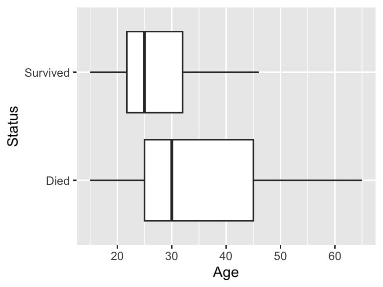
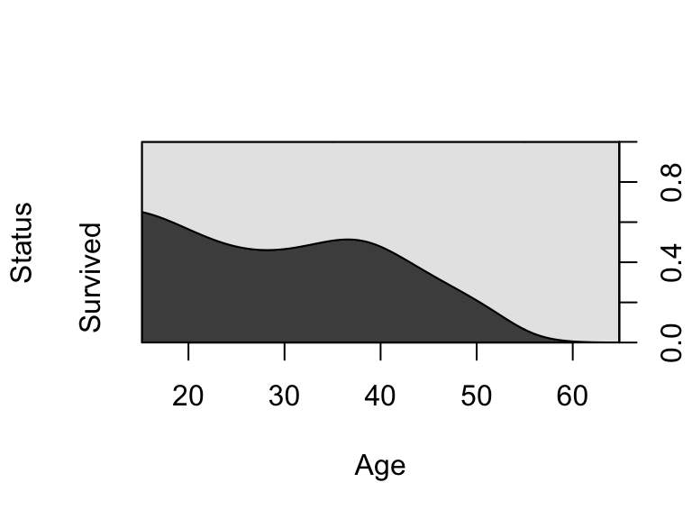
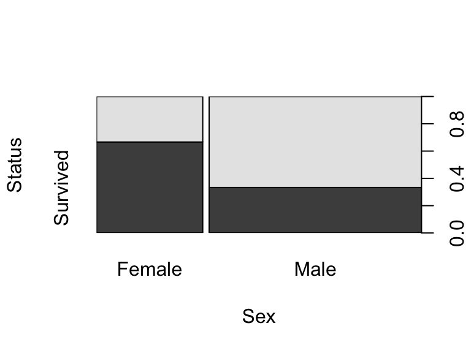
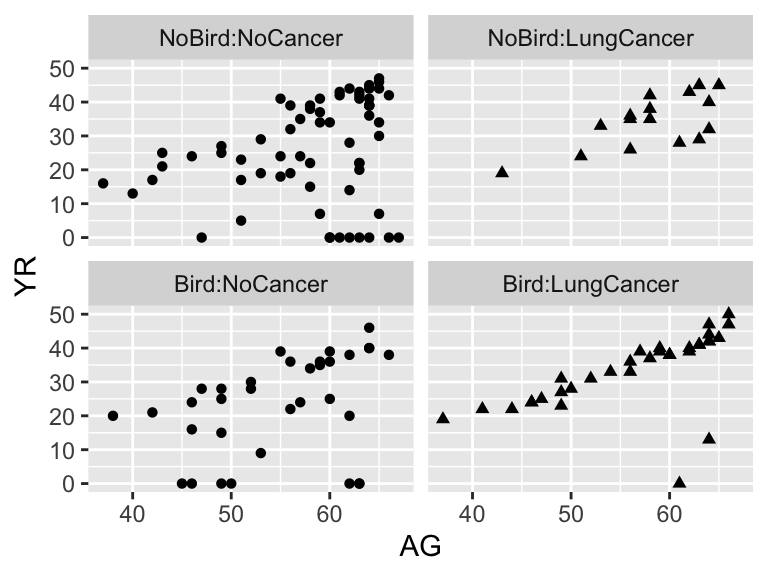

library(dplyr) # data manipulation
library(ggformula) # graphics
library(Sleuth3) # Sleuth data sets9 Logistic Regression for Binary Response Variables
We will also set some options to improve legibility of graphs and output.
# display four significant digits by default and no significance stars
options(digits = 4, show.signif.stars = FALSE) 10 Survival in the Donner Party
For any given age, were the odds of survival in the Donner Party greater for women than men? This is the question addressed in case study 20.1 in the Sleuth.
10.1 Summary statistics
We begin by reading the data (which is done when you loaded the Sleuth3 package) and exploring the relationships between age, sex, and survival status.
summary(case2001) Age Sex Status
Min. :15.0 Female:15 Died :25
1st Qu.:24.0 Male :30 Survived:20
Median :28.0
Mean :31.8
3rd Qu.:40.0
Max. :65.0 To begin exploring the relationship between Status and Age we can construct side-by-side boxplots
gf_boxplot(Age ~ Status, data = case2001) %>%
gf_refine(coord_flip())
We see that younger adults were more likely to survive. We can dig a little deeper into this association by creating a conditional density plot, where the conditional distribution of survival status given age is plotted:
cdplot(Status ~ Age, data = case2001)
The conditional density plot supports the claim that younger adults seem more likely to survive.
To explore the relationship between Status and Sex we can construct a spine plot, where the conditional distribution of survival is displayed by sex.
spineplot(Status ~ Sex, data = case2001)
Note: In order for our results to match those presented in the Sleuth we must reorder the levels of Status, making Male the reference/baseline level. This is easily done using the relevel() command:
case2001$Sex <- relevel(case2001$Sex, ref = "Male")10.2 Fitting the logistic regression model
The following code presents the results interpreted on page 608 and presented in Display 20.6 (on page 614):
# Parallel lines model
donner_mod1 <- glm(Status ~ Age + Sex, data = case2001, family = binomial)
summary(donner_mod1)
Call:
glm(formula = Status ~ Age + Sex, family = binomial, data = case2001)
Coefficients:
Estimate Std. Error z value Pr(>|z|)
(Intercept) 1.6331 1.1102 1.47 0.141
Age -0.0782 0.0373 -2.10 0.036
SexFemale 1.5973 0.7555 2.11 0.034
(Dispersion parameter for binomial family taken to be 1)
Null deviance: 61.827 on 44 degrees of freedom
Residual deviance: 51.256 on 42 degrees of freedom
AIC: 57.26
Number of Fisher Scoring iterations: 4A logistic regression model with an interaction term between age and sex is considered in Display 20.5 (on page 613). This model is fit using the code below:
# Separate lines model
donner_mod2 <- glm(Status ~ Age * Sex, data = case2001, family = binomial)
summary(donner_mod2)
Call:
glm(formula = Status ~ Age * Sex, family = binomial, data = case2001)
Coefficients:
Estimate Std. Error z value Pr(>|z|)
(Intercept) 0.3183 1.1310 0.28 0.778
Age -0.0325 0.0353 -0.92 0.357
SexFemale 6.9280 3.3989 2.04 0.042
Age:SexFemale -0.1616 0.0943 -1.71 0.086
(Dispersion parameter for binomial family taken to be 1)
Null deviance: 61.827 on 44 degrees of freedom
Residual deviance: 47.346 on 41 degrees of freedom
AIC: 55.35
Number of Fisher Scoring iterations: 510.3 Inferential tools
First, Display 20.5 (on page 613) details how to carryout Wald’s test for \(\beta_{\rm age \times sex} = 0\) from the second model. Notice that you can use the output from summary(donner_mod2) to conduct this test.
Next, the Sleuth builds a confidence interval for \(\beta_{\rm fem}\) from the parallel lines model (i.e. model 1). This is not the confidence interval returned by confint(), so it must be constructed by hand. Remember that the model coefficients are on the log-odds scale, be sure to back-transform in order to obtain interpretations on the odds scale!
beta_fem <- coef(donner_mod1)[3]
se_fem <- sqrt(vcov(donner_mod1)[3,3])
upper <- beta_fem + qnorm(.975) * se_fem
upperSexFemale
3.078 lower <- beta_fem - qnorm(.975) * se_fem
lowerSexFemale
0.1166 exp(upper)SexFemale
21.71 exp(lower)SexFemale
1.124 A more-reliable confidence interval for the coefficients can be obtained using the theory of the drop-in deviance test. This profile-likelihood confidence interval is obtained for all of the coefficients below:
CIs <- confint(donner_mod1, level = 0.95)Waiting for profiling to be done...CIs 2.5 % 97.5 %
(Intercept) -0.4088 4.02474
Age -0.1624 -0.01407
SexFemale 0.1951 3.22867# Backtransform to compare to the interval above
exp(CIs[3,]) 2.5 % 97.5 %
1.215 25.246 Notice that the intervals may disagree. Here the normal distribution gives the interval (1.124, 21.71) while the profile-likelihood confidence interval is (1.215, 25.246).
11 Birdkeeping and Lung Cancer
After controlling for age, socioeconomic status and smoking, is an additional risk of lung cancer associated with birdkeeping? This is the question addressed in case study 20.2 in the Sleuth.
11.1 Summary statistics
We begin by reading the data and recoding a few variable so that they match the coding using in the Sleuth.
summary(case2002) LC FM SS BK AG YR
LungCancer:49 Female: 36 High: 45 Bird :67 Min. :37 Min. : 0.0
NoCancer :98 Male :111 Low :102 NoBird:80 1st Qu.:52 1st Qu.:20.0
Median :59 Median :30.0
Mean :57 Mean :27.9
3rd Qu.:63 3rd Qu.:39.0
Max. :67 Max. :50.0
CD
Min. : 0.0
1st Qu.:10.0
Median :15.0
Mean :15.7
3rd Qu.:20.0
Max. :45.0 # Adjust the coding to match Sleuth's
case2002 <- case2002 %>%
mutate(LC = relevel(LC, ref = "NoCancer"),
FM = relevel(FM, ref = "Male"),
SS = relevel(SS, ref = "Low"),
BK = relevel(BK, ref = "NoBird"))Next, we create a coded (and faceted) scatterplot of years of smoking against age, where the plotting symbols are used to represent lung cancer status (Display 20.10, page 621):
gf_point(YR ~ AG | BK:LC, shape = ~LC, data = case2002) %>%
gf_refine(theme(legend.position = "none"))
11.2 The drop-in-deviance test
The goal of this case study is to see whether birdkeeping is associated with increased odds of lung cancer after accounting for several other factors. To do this, the Sleuth conducts a likelihood ratio test, also referred to as a drop-in-deviance test. In order conduct this test we need a full and reduced model, just like for an extra-sum-of-squares \(F\)-test for regression.
The full model from Display 20.7 (on page 616) is fitted below:
full_model <- glm(LC ~ FM + AG + SS + YR + BK, data = case2002, family = binomial)
full_model
Call: glm(formula = LC ~ FM + AG + SS + YR + BK, family = binomial,
data = case2002)
Coefficients:
(Intercept) FMFemale AG SSHigh YR BKBird
-1.4062 0.5213 -0.0463 0.1321 0.0829 1.3349
Degrees of Freedom: 146 Total (i.e. Null); 141 Residual
Null Deviance: 187
Residual Deviance: 155 AIC: 167The reduced model from Display 20.7 (on page 616) is fitted below:
reduced_model <- glm(LC ~ FM + AG + SS + YR, data = case2002, family = binomial)
reduced_model
Call: glm(formula = LC ~ FM + AG + SS + YR, family = binomial, data = case2002)
Coefficients:
(Intercept) FMFemale AG SSHigh YR
0.1032 0.7214 -0.0632 -0.0564 0.0873
Degrees of Freedom: 146 Total (i.e. Null); 142 Residual
Null Deviance: 187
Residual Deviance: 167 AIC: 177The drop-in-deviance test can be conducted by hand, as shown below:
# test statistic
dd_stat <- deviance(reduced_model) - deviance(full_model)
dd_stat[1] 11.29# d.f.
df <- df.residual(reduced_model) - df.residual(full_model)
df[1] 1# p-value
1 - pchisq(dd_stat, df = 1)[1] 0.0007786Alternatively, it can be conducted using the anova() command:
anova(reduced_model, full_model, test = "Chisq")Analysis of Deviance Table
Model 1: LC ~ FM + AG + SS + YR
Model 2: LC ~ FM + AG + SS + YR + BK
Resid. Df Resid. Dev Df Deviance Pr(>Chi)
1 142 166
2 141 155 1 11.3 0.0007811.3 Examining linearity
As mentioned in passing on page 620, we can check whether the relationship between the logit and a quantitative predictor is linear by using the sample (empirical) logit. The setup code-chunk in this r markdown document defines the function elogit() which calculates the empirical logit and produces a data frame for plotting. You can copy and paste this code, or load it using the following code:
source("http://aloy.rbind.io/r/emplogit.R")Once you have this function, you can reproduce Display 20.11:
## NEED TO FIX!!
sample_logit <- elogit(case2002$YR, case2002$LC, binsize = #breaks = c(0, 1, 20, 30, 40, 50))
gf_point(elogit ~ midpoint.x, data = sample_logit) %>%
gf_labs(x = "Years smoked (midpoint of interval)", y = "Sample Logit")Note: if you are not sure what intervals to use, but know the number of intervals desired, you can specify nbins rather than breaks in the elogit() function.